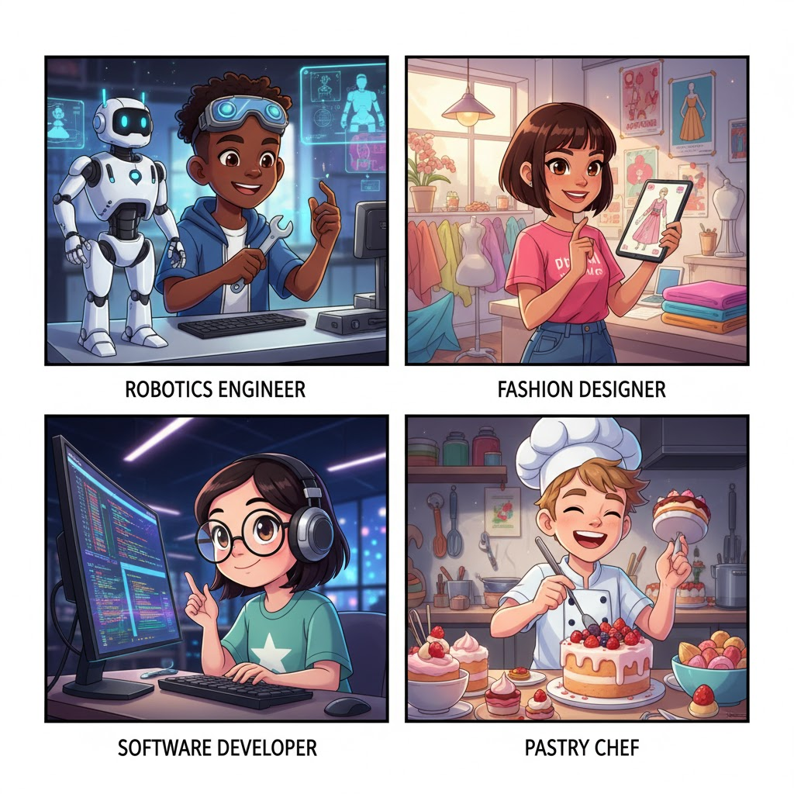
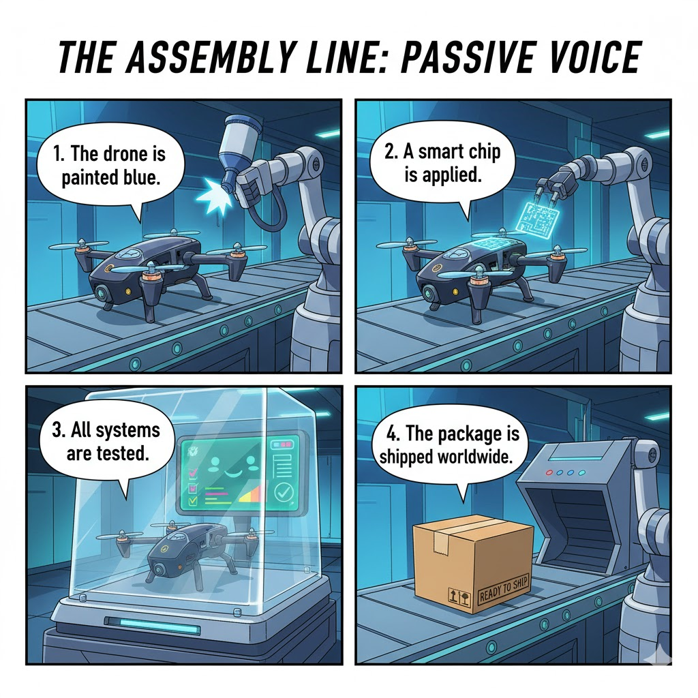
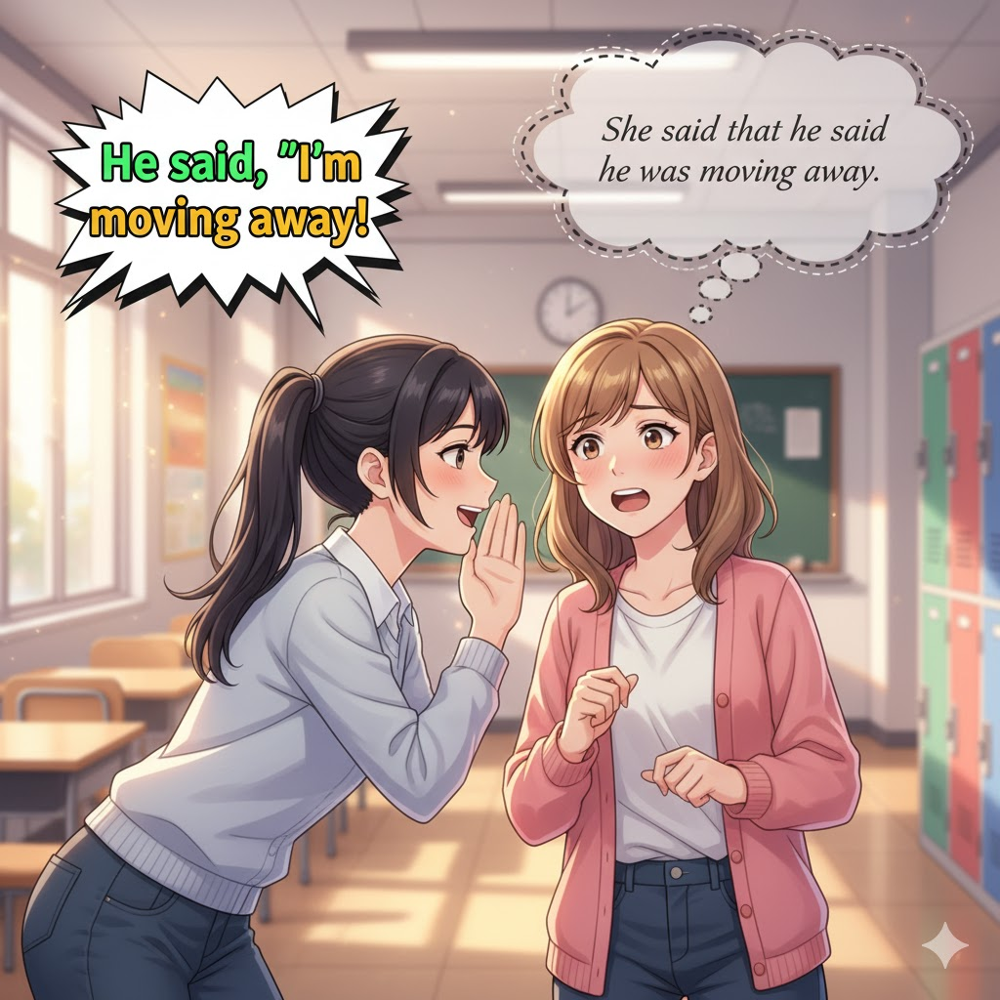
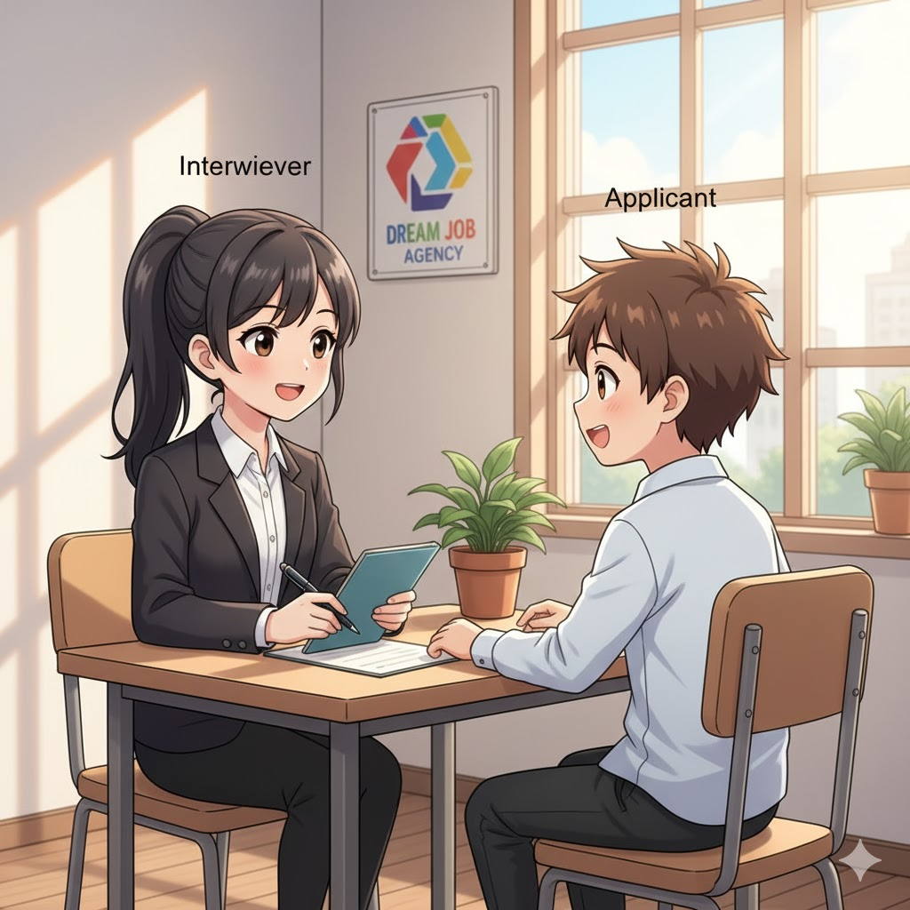
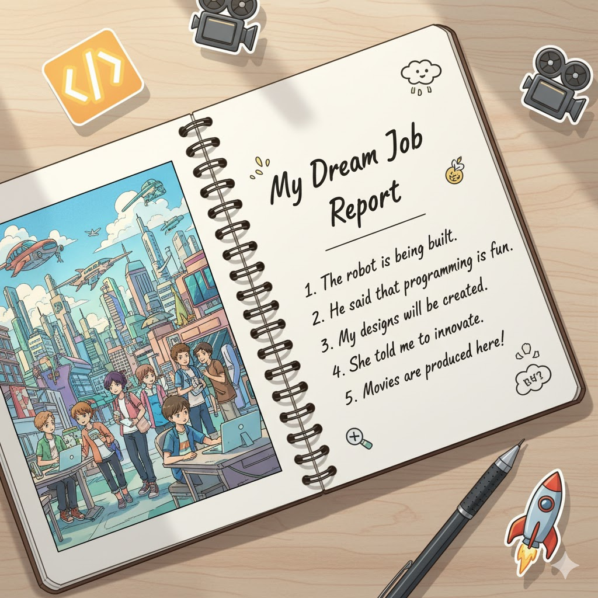

Discover cool jobs, talk about tasks, and learn how to report what people say.
By the end of this lesson, you can:
Let's look at some interesting jobs and what they are responsible for!

Use the **Passive Voice** when the action is more important than the person doing it.
Structure: **[Thing] + is/are + [Past Participle]**
Example 1 (Active): The Chef cooks the food.
Example 2 (Passive): The food is cooked by the Chef.
Example 3 (Active): Engineers fix the robots.
Example 4 (Passive): The robots are fixed by Engineers.

Activity: "Job Task Shuffle."
Students get cards with active sentences (e.g., "A programmer writes the code."). They must rewrite the sentences in the **Passive Voice** (The code is written by a programmer.).
Use **Reported Speech** to tell someone what another person said or asked.
Statement: "I like my job." -> She said that she liked her job.
Question: "Are you ready?" -> He asked if I was ready.

Activity: "The Gossip Game."
A student whispers a job-related sentence (Direct Speech) to the next student (e.g., "I am learning English."). That student reports it to the third student using Reported Speech (He/She **said that he/she was** learning English.).
Let's put it all together! Students pair up. One is the Interviewer, and one is the Applicant (for a job like "Space Chef" or "Robot Cleaner").
Example Questions:

Choose a new job title (like 'App Developer' or 'Movie Director'). Write a short report about it using the new grammar!

"Great work, Career Detectives! See you next time!"
做得好，職業偵探們！下次見！